Una sola app. Due mondi.
Palestra che conta le serie. Corsa che legge la strada.
KINEVA FIT unisce runner guidato, tecniche avanzate e GPS outdoor — sul telefono e al polso — così atleti e trainer restano sullo stesso ritmo.
Schede, GPS e Apple Watch
Scegli, pianifica, allenati. La tua agenda fitness su misura.
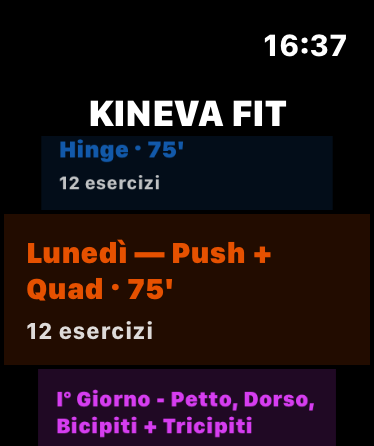
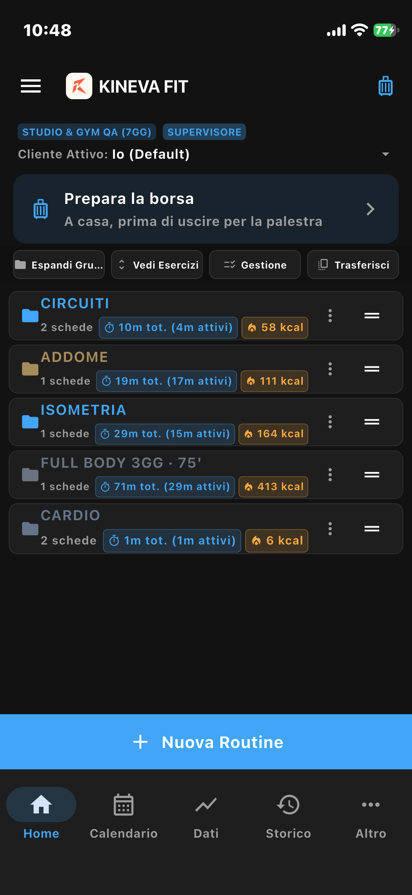
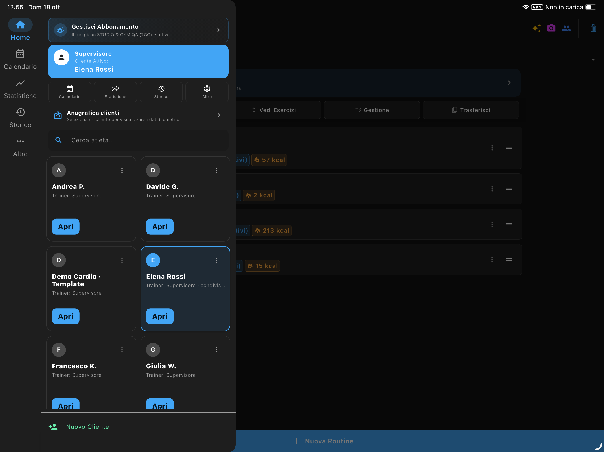
Android · iPhone · iPad · Apple Watch
Una sola app. Due mondi.
KINEVA FIT unisce runner guidato, tecniche avanzate e GPS outdoor — sul telefono e al polso — così atleti e trainer restano sullo stesso ritmo.
Dalla scheda al polso: le funzioni che fanno la differenza.
Tocca una voce: anteprima e dettagli si aprono qui sotto, senza lasciare la lista.
Backup e Export/Import → Mobilità e Pilates → Esplora tutte le schermate → Vedi i piani →
Analizza dati
Quattro viste collegate — composizione muscolare, performance, insights cardio/bio e aderenza al calendario — con mappa corporea KINEVA e filtri per periodo e cliente.
Distribuzione macro muscoli, top esercizi, frequenza sessioni e mappa corporea storica fronte/retro con evidenziazione zone lavorate.
Intensità forza per fasce, zone cardio da FC, record personali e media di intensità nel periodo scelto.
Trend passo, FC e dislivello; correlazioni carico ↔ biometria; panoramica team multi-cliente (Piano Pro e Gym).
Sessioni programmate vs completate, toggle bucket corrente o intero arco temporale, export JSON/PDF filtrato (Athlete Pro+).
Su home e nell’editor ogni routine mostra barra macro o silhouette anatomica KINEVA: capisci a colpo d’occhio upper, lower, core e zone target — prima ancora di avviare la sessione.
Vedi piani con analytics Athlete Pro · Piano Pro · Studio & Gym
Apple Watch
L’allenamento al polso, in sync con iPhone.
Invio schede (anche in batch), lista, avvio, serie e fine sessione al polso — analytics e storico tornano su iPhone. Complications KINEVA FIT (FC) e KINEVA Intervals sul quadrante.
KINEVA FIT (FC / workout) e KINEVA Intervals (timer) sul quadrante — dopo aver aperto l’app Watch, aggiungile da Modifica quadrante.
Home → Gestione: seleziona più schede o un gruppo e inviale al polso in un unico transfer.
Tap per pausa, doppio tap per riprendere. Nuoto in vasca e GPS outdoor restano guidati anche da Watch.
Vedi piani Athlete Apple Watch · sync con iPhone
Studio su iPad
Il tavolo di lavoro del trainer e della gym.
Su iPad gestisci profili, schede e consegna: File, Email o WhatsApp, PDF illustrato (GIF + QR) — da Trainer Pro fino a Studio & Gym.
Full Body A
iPad Pro
iPad Pro · Studio trainer
Vedi piani Trainer e Studio iPad · Trainer Pro → Studio & Gym
Piano Pro · Studio & Gym
Schede master, clienti, multi‑trainer con Supervisore, sospensione trainer/clienti, condivisione atleti tra staff, consegna File/Email/WhatsApp, PDF illustrati (GIF + QR), analytics e backup — area protetta da PIN.
Su tablet il Supervisore governa i posti trainer, assegna gli atleti allo staff e sposta clienti o profili tra device — senza mescolare gli spazi degli altri.
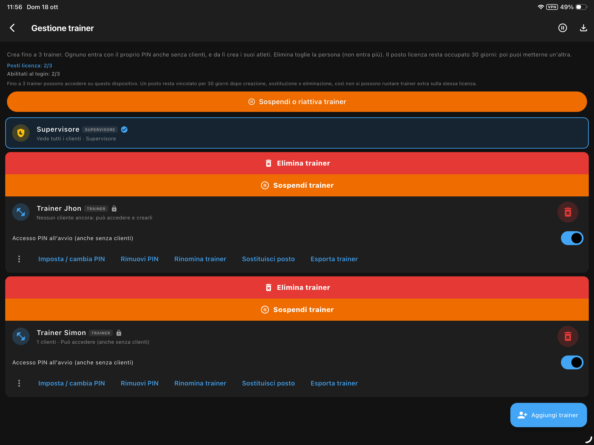
01 · Gestione trainerIl Supervisore crea fino a 3 trainer (nome + PIN), abilita chi entra nei turni e sospende lo staff senza cancellare i dati. Un Supervisore + 3 posti; in testata vedi sempre il ruolo attivo.
Percorso: login (rotella + PIN) → Gestione trainer · Piano Studio & Gym
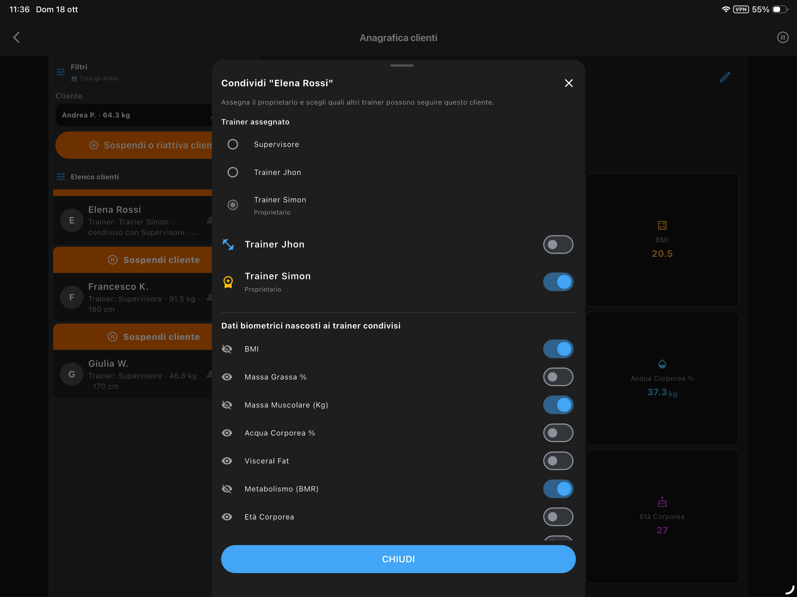
02 · Assegnazione clientiChi crea l’atleta ne è proprietario. Dal drawer puoi condividere lo stesso cliente con uno o più trainer: il ricevente gestisce schede e allenamenti; solo proprietario/Supervisore cancellano o ri-condividono.
Percorso: ☰ drawer → ⋯ sul cliente → Condividi con i trainer · oppure assegna schede dal catalogo master
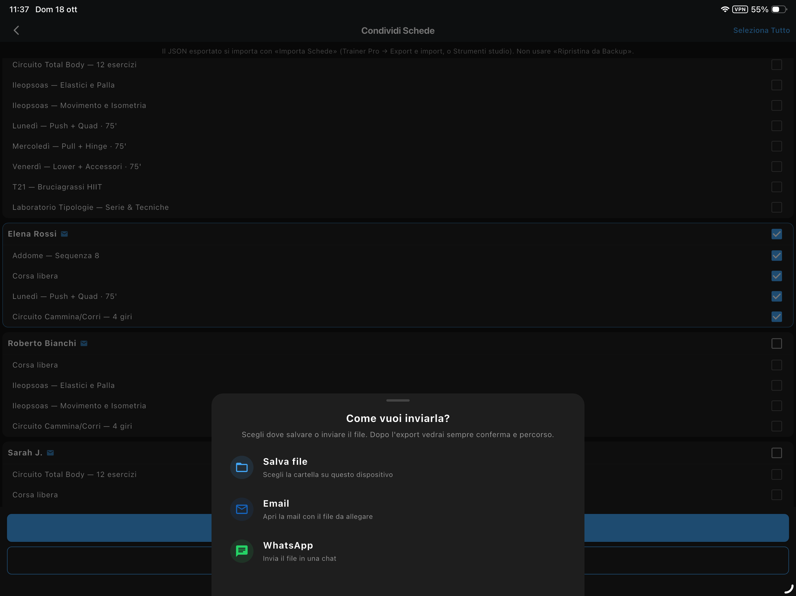
03 · TrasferimentoSullo stesso device: togli o sposta la condivisione tra trainer senza perdere lo storico del proprietario. Tra iPad/iPhone: export/import del profilo trainer (clienti + schede + storico) — distinto dal Backup Completo e dal solo JSON schede.
Percorso: Condividi con i trainer · Export/import profilo trainer · vedi anche #staff-trainers e #backup-export
Dettaglio posti, turni e chi→chi →
Seleziona gruppi o schede dal profilo master e assegnale in blocco a N clienti; avviso se esistono già schede omonime.
Vista per atleta o per scheda: cerca, seleziona multiplo, archivia o elimina. Notifica email BCC opzionale agli interessati.
Elimina schede obsolete su più profili in un’unica operazione — ideale per cambi stagione o fine ciclo.
Export con profilo, schede ed esercizi custom incorporati. L’atleta (o un collega con la stessa app) importa e sceglie i clienti destinazione.
Tabella compatta o illustrata: QR YouTube, silhouette e istruzioni sulla riga (GIF Gym Visual solo in-app), stesso numero #. Logo studio; export massivo sequenziale.
Dopo il formato scegli dove mandare il file. Copia sempre salvata sul dispositivo. Immagine HD per la chat; badge «INVIATA» e invio alle Apple Watch dei clienti.
Editor database: crea esercizi con muscoli, attrezzo, tipologia, difficoltà e note. Gestisci muscoli, attrezzi e categorie del catalogo.
Catalogo limitazioni motorie personalizzabile; ogni esercizio indica per quali condizioni è sconsigliato.
Segmenti Upper/Lower/Core/Mobilità (Pro/Studio). Dump catalogo solo Studio & Gym: QR YouTube, silhouette e branding (GIF solo in-app).
Anagrafica completa: limitazioni motorie attive, sport, protocolli mobilità (Studio), biometria e obiettivi — tutto filtrato per cliente.
In selezione esercizi gli movimenti in conflitto con il profilo vengono nascosti; banner in sessione e avvisi su PDF/immagini export.
In allenamento, sostituisci un esercizio restando sullo stesso gruppo muscolare — coerenza di stimolo senza rifare la scheda.
Fino a 8 clienti (Pro) o illimitati (Studio): ricerca, duplica, sospendi/riattiva ed elimina batch; export CSV biometria e storico.
Flussi distinti: Backup Completo (tu→tuo device), JSON schede (trainer↔collega via Importa Schede), ZIP storico (tu→archivio→tu), PDF al cliente. Dettaglio in #backup-export.
Appuntamenti trainer nel calendario, logo e nome studio su ogni PDF, area Pro con PIN, Face ID / Touch ID, codice recupero 8 cifre e condivisione file tra colleghi.
Esporta workout, biometria e analytics per uno o più clienti con filtri su periodo e intervallo date — share sheet nativo.
Tabella riepilogo per atleta: sessioni nel periodo, volume o distanza, ultima sessione e aderenza al calendario programmato.
Insights che incrociano trend volume/distanza con peso, massa grassa e muscolare — utili per check-in e aggiustamenti di ciclo.
Solo il Supervisore crea i trainer (nome + PIN), abilita l’accesso e gestisce i posti: 3 trainer per dispositivo + supervisore. In testata vedi sempre il ruolo attivo.
All’avvio scegli Supervisore o Trainer (rotella) e digita il PIN sul tastierino a schermo. Ogni trainer vede solo i propri clienti e i condivisi; schede, storico e statistiche restano separati.
Dal drawer: ⋯ sul cliente → «Condividi con i trainer». Imposta proprietario e chi può seguire l’atleta; puoi nascondere campi biometrici. Togliere la condivisione non cancella i dati del proprietario.
In Gestione trainer sospendi uno o più colleghi (anche in batch): il login dello staff sospeso si blocca finché non lo riattivi. Eliminare un trainer non libera subito il posto (cooldown 30 giorni).
Metti in pausa atleti fuori stagione o inattivi senza cancellare schede e storico; badge «Sospeso» e riattivazione quando tornano in palestra — anche in selezione multipla.
Export/import del profilo trainer (clienti, schede e storico) per spostare uno staff da un iPad/iPhone a un altro, senza mescolare gli spazi degli altri trainer.
File, Email e WhatsApp: il PDF/JSON/immagine resta sempre salvato in locale, poi si apre la condivisione. Multi‑trainer, sospensioni e condivisione clienti richiedono Studio & Gym (Supervisore). Free e Athlete: profilo personale singolo; multi-cliente da Piano Pro.
Staff, posti e clienti → Backup e Export/Import → Confronta Piano Pro e Studio → Vedi iPad →
Studio & Gym · Staff
Nella palestra un Supervisore governa lo staff sullo stesso iPad/iPhone: crea i trainer, decide chi può accedere (turni), assegna o condivide i clienti e sposta un trainer su un altro dispositivo senza mescolare gli spazi altrui.
Percorsi: login (rotella profilo + PIN) · Impostazioni / Gestione trainer (solo Supervisore) · drawer ☰ → ⋯ sul cliente → Condividi con i trainer · Export/import profilo trainer.
Regola pratica: sul device convivono 1 Supervisore (non consuma posto) + fino a 3 posti trainer. Puoi abilitare al login 1, 2 o tutti e 3 per i turni: usa l’app una persona alla volta, ma i profili e i clienti restano separati.
1 · Posti e turni sullo stesso device
2 · Creare e governare i trainer
3 · Assegnare e condividere i clienti
4 · Trasferire un trainer tra dispositivi
5 · Pause e continuità
Sospendi trainer (niente login fino alla riattivazione) o clienti fuori stagione senza cancellare schede e storico. Badge «Sospeso», anche in selezione multipla. Per liberare un posto dopo uscita staff: cooldown 30 giorni / sostituzione posto — non basta eliminare il profilo.
Torna a Studio & Gym → Backup e Export/Import → Vedi piano Studio & Gym →
Dati · chi → chi
In Trainer Pro le azioni sono separate: un Backup Completo non è uno scambio di schede; un JSON schede non si apre con «Ripristina da Backup»; uno ZIP storico non ripristina le schede. Ogni file ha un solo ingresso corretto.
Percorsi: Altro → Trainer Pro (Backup / Export e import) · Impostazioni → Base (storico ZIP atleta) · Home → ⋯ sulla scheda (PDF/immagine al cliente).
Regola pratica: scegli il canale (File, Email, WhatsApp o cloud) solo dopo aver creato il file giusto. Il destinatario deve usare la voce di import corrispondente — non quella di un’altra categoria.
1 · Backup e ripristino app
2 · Schede tra trainer / dispositivi (JSON)
3 · Export JSON personale (schede del profilo)
4 · PDF / immagine di una scheda al cliente
5 · Storico e grafici (ZIP)
6 · Gestione (non è uno scambio file)
In Export e import → Gestione trovi strumenti come la pulizia multipla schede: operano sui clienti già in app, non generano un pacchetto da mandare a un collega. Per CSV biometria/storico per cliente usa le voci dedicate in area trainer (abbonamento a pagamento).
Staff e multi-trainer → Torna a Studio & Gym → Vedi piani e limiti →
Mobilità & Pilates
Due percorsi dedicati nella stessa app.
Protocolli di mobilità per prevenire e recuperare; Pacchetto Pilates come add-on con esercizi mat e macchina, note e silhouette anatomiche.
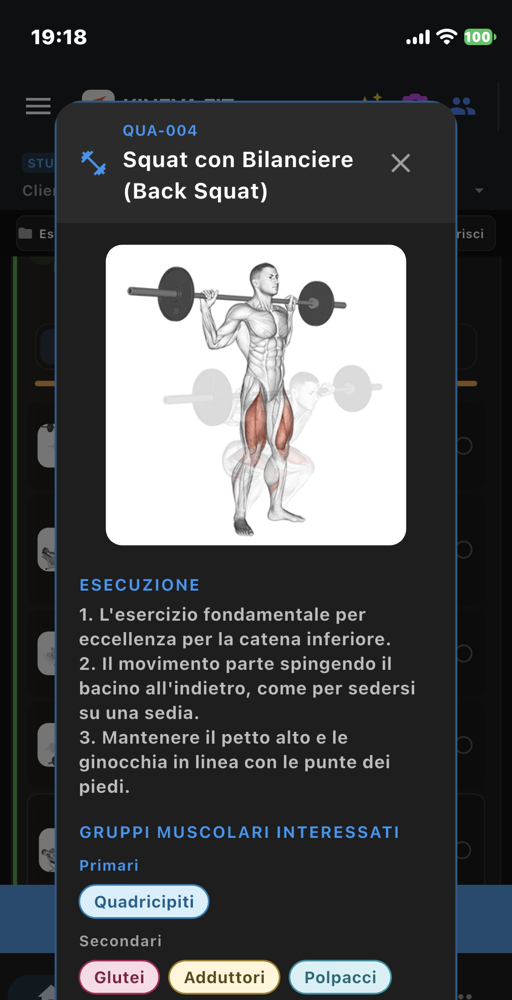
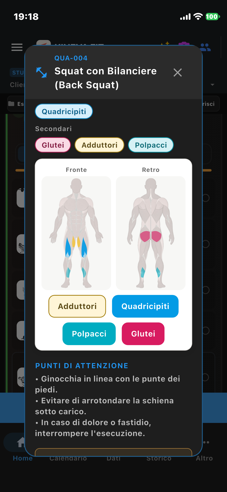
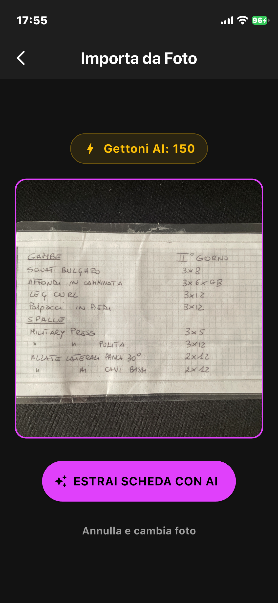
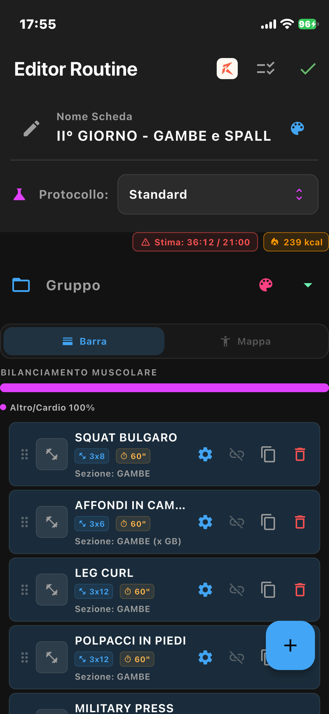
AI KINEVA FIT
Wizard, foto e scansione biometrica.
Tre usi dei crediti AI: genera una scheda dal profilo, importa da foto/screenshot, oppure scansiona la composizione corporea. Revisiona sempre il risultato nell’editor.
Ancora di più
Oltre a iPad e AI, KINEVA FIT spinge su analytics, ritmo, privacy, sicurezza e controllo.
Composizione con mappa muscolare KINEVA, performance, insights cardio/bio, aderenza calendario e export JSON/PDF.
Toggle barra macro o silhouette anatomica su home e editor — preview dello stimolo muscolare di ogni routine.
Metodologia strutturata per obiettivi e livelli: schede coerenti, non improvvisate.
Filtro limiti motori e protocolli di mobilità: adatta gli esercizi al profilo reale.
Add-on una tantum (9,99 €): 49 esercizi mat e macchina. Richiede Athlete Pro+; distinto dai protocolli mobilità di Studio.
Vasche con stili target; GPS corsa/camminata/bici con mappa e voce al km — anche da Watch.
Pianifica sessioni, riprendi da dove hai lasciato, esporta JSON/ZIP e PDF brandizzati (File, Email o WhatsApp).
Dalla Home: tabella PDF compatta o illustrata (GIF, QR, silhouette, stesso #), manuale Pro e immagine HD. Il file resta sempre sul dispositivo.
Trainer Pro: disaster recovery dell’intera app separato da export/import per schede, storico ZIP e gestione. Stessa logica della guida utente.
Manuali Upper/Lower/Core/Mobilità (Piano Pro/Studio): QR YouTube, silhouette e logo studio (GIF solo in-app). Dump catalogo completo: solo Studio & Gym.
Assegna, archivia ed elimina schede su più atleti; duplica profili e export CSV biometria/storico.
Interfaccia IT, EN, DE, FR, ES — schede e date localizzate per atleti e studi misti.
Offline-first: schede e storico restano sul telefono. GPS e traccia non vanno su server KINEVA FIT. HealthKit (iOS) per sessioni e FC se autorizzi.
Area trainer con PIN a 4 cifre, sblocco Face ID / Touch ID e codice di recupero a 8 cifre. KINEVA FIT non è un dispositivo medico.
Scorri le viste principali: dove c’è una demo video, parte in automatico (senza audio).
#01 · 01-home.png
Gruppi, routine, template e avvio. Anteprima mappa muscolare ed export schede (File, Email, WhatsApp).
#02 · 02-runner.png · 21-runner-rest.png
Guida esercizio per esercizio: recupero, TTS, uno-due, tecniche avanzate e riepilogo finale.
#03 · 03-calendar.png
Vista mensile e giornaliera con sessioni programmate, completate e appuntamenti PT.
#04 · 04-progress.png
Composizione muscolare con mappa KINEVA, performance, insights e aderenza — filtri per periodo e cliente.
#05 · 05-history.png
Storico filtrabile con export JSON e archivio ZIP (Pro) per backup e confronto.
#06 · 06-editor.png
Configura serie, recuperi e metodi avanzati; anteprima mappa muscolare della scheda mentre componi.
#07 · 07-settings.png
Voce, volume TTS sync Watch, guida ripetizioni, GPS di sessione, unità, vibrazione, mute e modalità screenshot.
#08 · 08-watch-*.png
Dal polso: lista schede ricevute, avvio, sessione e fine — sync iPhone, complications KINEVA FIT e KINEVA Intervals.
#09 · 09-gps-map.png
Traccia outdoor (corsa, camminata, bici), passo, voce al km e target o misura libera (Athlete Pro+).
#10 · 10-trainer.png
Area PIN con clienti, distribuzione schede master, export File/Email/WhatsApp, PDF illustrati, database esercizi e pannello admin.
#12 · 12-prep-checklist.png
Checklist attrezzatura da spuntare a casa prima di uscire: voci ON/OFF e avvio allenamento quando sei pronto.
#14 · 14-summary-reminder.png
A fine scheda: badge AVVISO e messaggio globale (es. cosa rimettere in borsa), più metriche della sessione.
#15 · 15-history-detail.png
Nella cronologia: esercizi, blocchi e serie di una sessione completata (anche multi-atleta).
#16 · 16-gps-charts.png
Dopo la corsa: dislivello, passo al km e frequenza cardiaca colorati per intensità.
#17 · 17-exercise-editor.png
Dentro la scheda: kg, ripetizioni, serie generate e recuperi differenziati per ogni esercizio.
#01 · demo
#01 · 01-home.png
#08 · 08-watch-list.png
Movimento · Ottimizzazione · Vitalità · Evoluzione
Piano Free: 1 scheda, 1 gruppo, 15 esercizi, 3 crediti AI/mese. Niente distanza/GPS, Watch né PDF scheda (Athlete Pro+). Prova 7 giorni in Store.
Pagamento unico · 2 mesi omaggio (−17%)
49.99€ / anno
Popolare
199.99€ / anno
499.99€ / anno
L’annuale si paga in un’unica soluzione e include 2 mesi omaggio (−17%). Disdici quando vuoi prima del rinnovo.
Prova gratuita 7 giorni sugli abbonamenti App Store e Google Play (offerta introduttiva Store).
KINEVA FIT è in distribuzione su Android e Apple. Scrivici per beta o info commerciali.
Supporto: Support@synapse-digital-adv-app.com
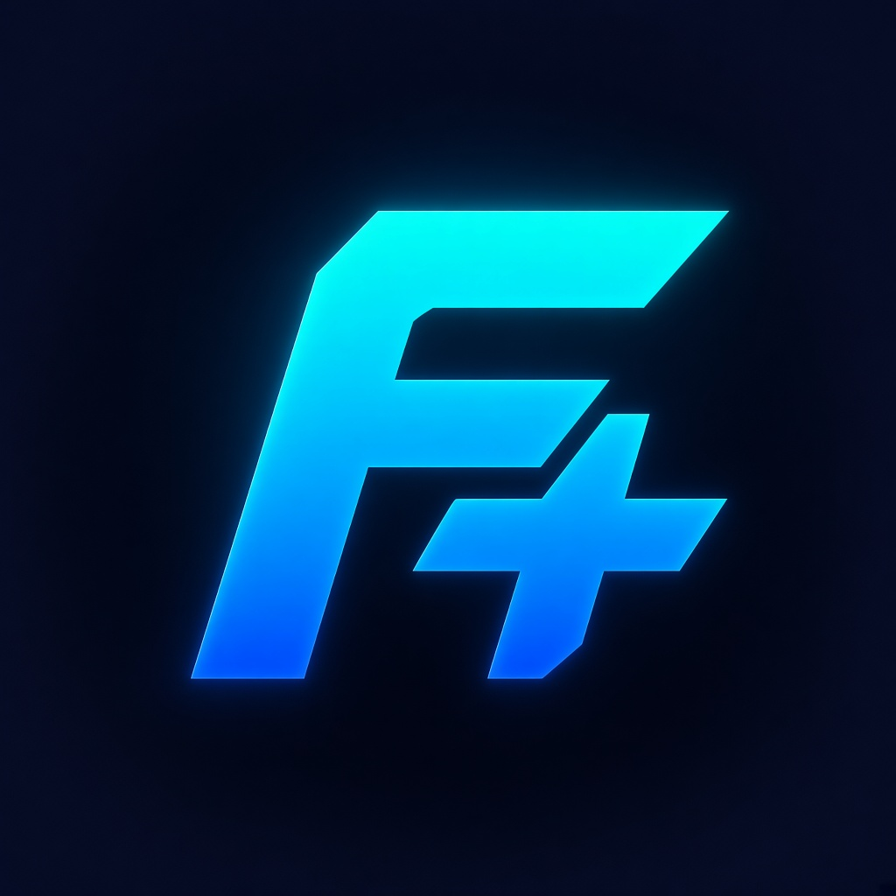
Legal entity / publisher
KINEVA FIT è sviluppata e pubblicata da SYNAPSE DIGITAL Advanced App Development.